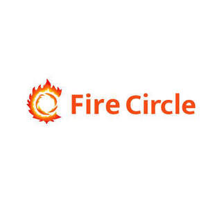

Trade Mark Journal No.2025/047 21 November 2025
UK00004293042 11 November 2025 (9,45)

- Class 9
- Software applications for use with mobile devices; Software applications for mobile devices; Software and applications for mobile devices; Mobile application software; Application software for mobile devices; Application software for mobile phones; Downloadable software applications for mobile phones; Mobile software; Software applications; Computer application software for mobile phones; Computer application software for mobile telephones; Smartphone software applications, downloadable; Downloadable applications for use with mobile devices; Downloadable applications for mobile devices; Computer software applications; Downloadable mobile applications; Application software for wireless devices; Software for mobile phones; Downloadable mobile applications for use with wearable computer devices; Downloadable software applications; Downloadable computer software applications; Computer software applications, downloadable; Downloadable software in the nature of a mobile application; Downloadable smart phone applications (software); Software for mobile device management; Application software; Educational mobile applications; Mobile device management software; Computer software for mobile phones; Application software for smart phones; Computer software for mobile applications that enable interaction and interface between vehicles and mobile devices; Web application software; Downloadable mobile applications for the management of data; Downloadable application software for smart phones; Application software for televisions; Computer application software; Computer programs and software for image processing used for mobile phones; Software for smartphones; Computer application software for use with wearable computer devices; Electronic game software for mobile phones; Application software for cloud computing services; Downloadable smart phone application software; Business application software; Downloadable mobile applications for the management of information; Application suites [software]; Downloadable application software; Computer game software for use on mobile devices; Smartphone software; Application development software; Downloadable mobile applications for the transmission of data; Application server software; Web application and server software; Application software for robot; Enterprise application software [EAS]; Computer software for application and database integration; Mobile apps; Computer software platforms; Downloadable application software for virtual environments; Application simulation software; Augmented reality software for use in mobile devices; Computer software to enhance the audio-visual capabilities of multimedia applications; Computer application software for TV; Downloadable software in the nature of a mobile application for playing games; Downloadable mobile applications for the transmission of information; Downloadable game related software applications; Computer telephony software; Computer game software for use on mobile and cellular phones; Middleware for management of software functions on electronic devices; Application software for smart TV; Computer software for use on handheld mobile digital electronic devices and other consumer electronics; Collaboration software platforms [software]; Telemetry devices for engine applications; Computer software for cellular phones; Electronic game software for wireless devices; Computer application software featuring games and gaming; Downloadable computer software for use as an application programming interface (API); Downloadable software in the nature of a mobile application for food delivery and ordering; Software; Downloadable computer software for blockchain technology; Downloadable electronic game software for wireless devices; Digital telephone platforms and software; Mobile computers; Multimedia software; Computer software development tools; Computer software to enable the transmission of photographs to mobile telephones; Educational computer applications; Application software for social networking services via internet; Computer software for use as an application programming interface (API); Downloadable mobile applications for booking taxis; Web development software; Computer e-commerce software; Software related to handheld digital electronic devices; Software for the planning, integration and optimization of Smart City applications; Software for the planning, integration and optimisation of smart city applications; Computer application software for use in implementing the Internet of Things [IoT]; Downloadable applications; Software testing software; Educational tablet applications; Computer software platforms for social networking; Telecommunications software; Enterprise software; Personal computer application software for document control systems; Downloadable software in the nature of a mobile application for dark kitchen delivery and ordering; Software for online messaging; E-commerce software; Software for tablet computers; Augmented reality software for use in mobile devices for integrating electronic data with real world environments; Downloadable computer game software via a global computer network and wireless devices.
- Class 45
- Dating services; Internet dating services; Video dating services; Dating agency services; Agency services (Dating -); Computer dating services; Internet based dating, matchmaking and personal introduction services; Dating services provided through social networking; Internet based matchmaking services; Matchmaking services; Marriage counseling; Marriage agency services; Online social networking services; Marriage agencies; Marriage guidance counselling; On-line social networking services; Marriage bureau services; Divorce mediation services; Marriage bureaux; Social escort agency services; Online social networking services accessible by means of downloadable mobile applications; Content moderation for internet chatrooms; Wedding chapel services; Conducting civil marriage ceremonies; Escort agencies [social]; Internet-based social networking services; Providing and conducting non-denominational, non-religious civil marriage ceremonies; Consulting in the field of personal relationships; Astrology consultation.
Cristian Octavian Vintiloiu